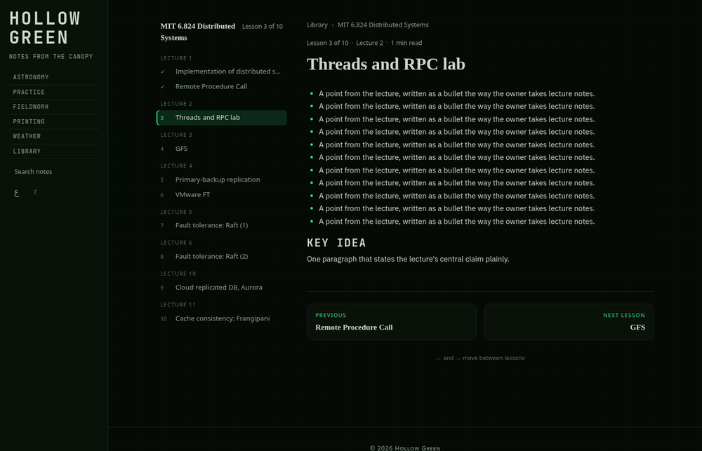
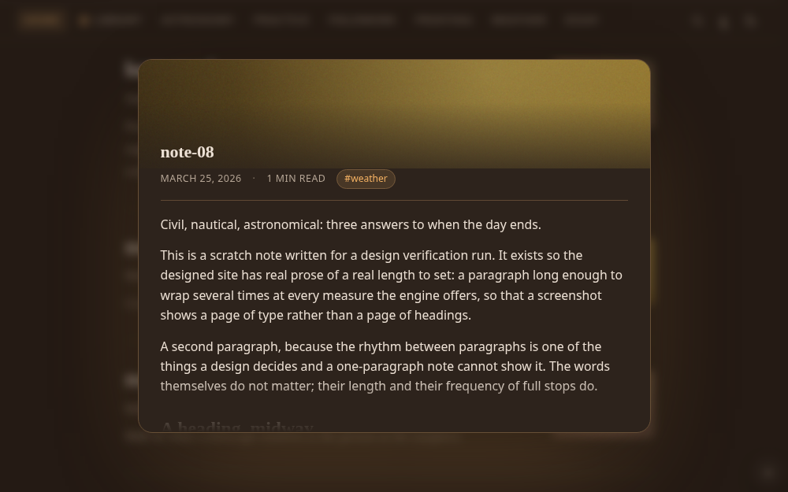
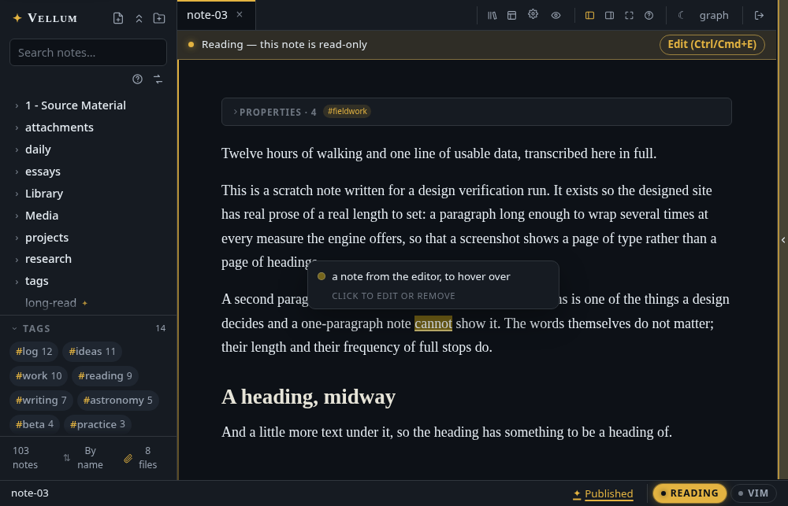

Books and courses, read in order
Right-click a folder of your vault and put it on the shelf as a book, a course or a series. Its subfolders become the chapters or lectures, its published notes the lessons, and a reader gets a shelf, a path and a lesson page that says where they are, keeps their place, and walks on the arrow keys.

A constellation you can colour
Every wikilink, drawn by a force simulation that holds sixty frames a second at thousands of notes. Colour by folder or by tag, gather tags under one name, hide what you are not looking at, search for a note and watch it light, and tune the forces until it looks like your vault.

Rest on a title and the essay offers itself
A centred preview over a dimmed page, under the post's own banner, with its date, reading time and tags. Topics, collections, RSS, a sitemap, server-side meta for the crawlers, and readers' comments you moderate with one click.

Say something about a sentence without changing the note
Select a passage, pick an ink, write. The annotation lives beside the vault, anchored by the words themselves, so it survives every edit. Keep it to yourself, or show it to readers as the author's note.

Obsidian's habits, your browser
Live preview, wikilinks with autocomplete, backlinks, transclusions, callouts, KaTeX, a command palette, vim mode, daily notes, three hundred folder marks with a search, a PDF reader that keeps your page and takes your highlights into notes. Arabic and RTL throughout, with Hijri dates.